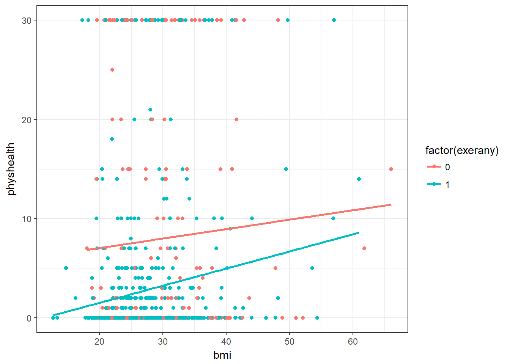
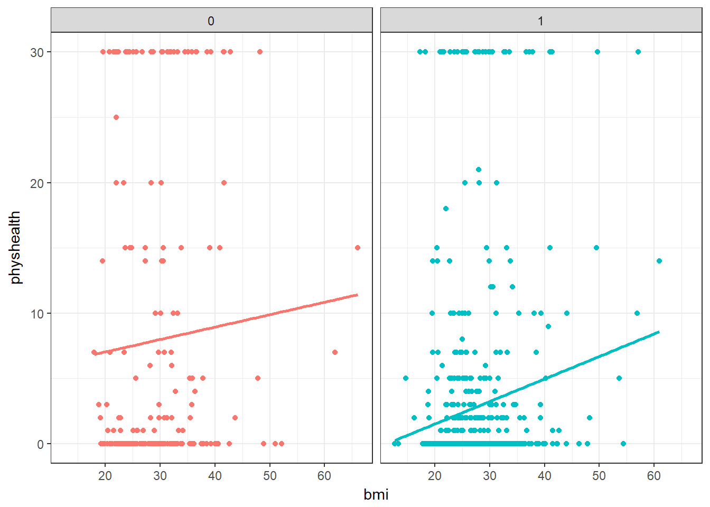

Chapter 2 Linear Regression on a small SMART data set
2.1 BRFSS and SMART
The Centers for Disease Control analyzes Behavioral Risk Factor Surveillance System (BRFSS) survey data for specific metropolitan and micropolitan statistical areas (MMSAs) in a program called the Selected Metropolitan/Micropolitan Area Risk Trends of BRFSS (SMART BRFSS.)
In this work, we will focus on data from the 2016 SMART, and in particular on data from the Cleveland-Elyria, OH, Metropolitan Statistical Area. The purpose of this survey is to provide localized health information that can help public health practitioners identify local emerging health problems, plan and evaluate local responses, and efficiently allocate resources to specific needs.
2.1.1 Key resources
- the full data are available in the form of the 2016 SMART BRFSS MMSA Data, found in a zipped SAS Transport Format file. The data were released in August 2017.
- the MMSA Variable Layout PDF which simply lists the variables included in the data file
- the Calculated Variables PDF which describes the risk factors by data variable names - there is also an online summary matrix of these calculated variables, as well.
- the lengthy 2016 Survey Questions PDF which lists all questions asked as part of the BRFSS in 2016
- the enormous Codebook for the 2016 BRFSS Survey PDF which identifies the variables by name for us.
Later this term, we’ll use all of those resources to help construct a more complete data set than we’ll study today. I’ll also demonstrate how I built the smartcle1 data set that we’ll use in this Chapter.
2.2 The smartcle1 data: Cookbook
The smartcle1.csv data file available on the Data and Code page of our website describes information on 11 variables for 1036 respondents to the BRFSS 2016, who live in the Cleveland-Elyria, OH, Metropolitan Statistical Area. The variables in the smartcle1.csv file are listed below, along with (in some cases) the BRFSS items that generate these responses.
| Variable | Description |
|---|---|
SEQNO |
respondent identification number (all begin with 2016) |
physhealth |
Now thinking about your physical health, which includes physical illness and injury, for how many days during the past 30 days was your physical health not good? |
menthealth |
Now thinking about your mental health, which includes stress, depression, and problems with emotions, for how many days during the past 30 days was your mental health not good? |
poorhealth |
During the past 30 days, for about how many days did poor physical or mental health keep you from doing your usual activities, such as self-care, work, or recreation? |
genhealth |
Would you say that in general, your health is … (five categories: Excellent, Very Good, Good, Fair or Poor) |
bmi |
Body mass index, in kg/m2 |
female |
Sex, 1 = female, 0 = male |
internet30 |
Have you used the internet in the past 30 days? (1 = yes, 0 = no) |
exerany |
During the past month, other than your regular job, did you participate in any physical activities or exercises such as running, calisthenics, golf, gardening, or walking for exercise? (1 = yes, 0 = no) |
sleephrs |
On average, how many hours of sleep do you get in a 24-hour period? |
alcdays |
How many days during the past 30 days did you have at least one drink of any alcoholic beverage such as beer, wine, a malt beverage or liquor? |
str(smartcle1)Classes 'tbl_df', 'tbl' and 'data.frame': 1036 obs. of 11 variables:
$ SEQNO : num 2.02e+09 2.02e+09 2.02e+09 2.02e+09 2.02e+09 ...
$ physhealth: int 0 0 1 0 5 4 2 2 0 0 ...
$ menthealth: int 0 0 5 0 0 18 0 3 0 0 ...
$ poorhealth: int NA NA 0 NA 0 6 0 0 NA NA ...
$ genhealth : Factor w/ 5 levels "1_Excellent",..: 2 1 2 3 1 2 3 3 2 3 ...
$ bmi : num 26.7 23.7 26.9 21.7 24.1 ...
$ female : int 1 0 0 1 0 0 1 1 0 0 ...
$ internet30: int 1 1 1 1 1 1 1 1 1 1 ...
$ exerany : int 1 1 0 1 1 1 1 1 1 0 ...
$ sleephrs : int 6 6 8 9 7 5 9 7 7 7 ...
$ alcdays : int 1 4 4 3 2 28 4 2 4 25 ...2.2.1 Omitting Missing Observations: Complete-Case Analyses
For the purpose of fitting our first few models, we will eliminate the missingness problem, and look only at the complete cases in our smartcle1 data.
To inspect the missingness in our data, we might consider using the skim function from the skimr package. We’ll exclude the respondent identifier code (SEQNO) from this summary as uninteresting. In this case, we’ll use the skim_with command to set some options that will make this book work a bit more effectively, by eliminating the spark graphs that we’ll demonstrate in class.
skim_with(numeric = list(hist = NULL), ts = list(line_graph = NULL))
smartcle1 %>% skim(-SEQNO)Skim summary statistics
n obs: 1036
n variables: 11
Variable type: factor
variable missing complete n n_unique
genhealth 3 1033 1036 5
top_counts ordered
2_V: 350, 3_G: 344, 1_E: 173, 4_F: 122 FALSE
Variable type: integer
variable missing complete n mean sd p0 p25 median p75 p100
alcdays 46 990 1036 4.65 8.05 0 0 1 4 30
exerany 3 1033 1036 0.76 0.43 0 1 1 1 1
female 0 1036 1036 0.6 0.49 0 0 1 1 1
internet30 6 1030 1036 0.81 0.39 0 1 1 1 1
menthealth 11 1025 1036 2.72 6.82 0 0 0 2 30
physhealth 17 1019 1036 3.97 8.67 0 0 0 2 30
poorhealth 543 493 1036 4.07 8.09 0 0 0 3 30
sleephrs 8 1028 1036 7.02 1.53 1 6 7 8 20
hist
<U+2587><U+2582><U+2581><U+2581><U+2581><U+2581><U+2581><U+2581>
<U+2582><U+2581><U+2581><U+2581><U+2581><U+2581><U+2581><U+2587>
<U+2585><U+2581><U+2581><U+2581><U+2581><U+2581><U+2581><U+2587>
<U+2582><U+2581><U+2581><U+2581><U+2581><U+2581><U+2581><U+2587>
<U+2587><U+2581><U+2581><U+2581><U+2581><U+2581><U+2581><U+2581>
<U+2587><U+2581><U+2581><U+2581><U+2581><U+2581><U+2581><U+2581>
<U+2587><U+2581><U+2581><U+2581><U+2581><U+2581><U+2581><U+2581>
<U+2581><U+2581><U+2587><U+2581><U+2581><U+2581><U+2581><U+2581>
Variable type: numeric
variable missing complete n mean sd p0 p25 median p75 p100
bmi 84 952 1036 27.89 6.47 12.71 23.7 26.68 30.53 66.06Now, we’ll create a new tibble called smartcle2 which contains every variable except poorhealth, and which includes all respondents with complete data on the variables (other than poorhealth). We’ll store those observations with complete data in the smartcle2 tibble.
smartcle2 <- smartcle1 %>%
select(-poorhealth) %>%
filter(complete.cases(.))
smartcle2# A tibble: 896 x 10
SEQNO physhealth menthealth genhealth bmi female internet30 exerany
<dbl> <int> <int> <fct> <dbl> <int> <int> <int>
1 2.02e9 0 0 2_VeryGo~ 26.7 1 1 1
2 2.02e9 0 0 1_Excell~ 23.7 0 1 1
3 2.02e9 1 5 2_VeryGo~ 26.9 0 1 0
4 2.02e9 0 0 3_Good 21.7 1 1 1
5 2.02e9 5 0 1_Excell~ 24.1 0 1 1
6 2.02e9 4 18 2_VeryGo~ 27.6 0 1 1
7 2.02e9 2 0 3_Good 25.7 1 1 1
8 2.02e9 2 3 3_Good 28.5 1 1 1
9 2.02e9 0 0 2_VeryGo~ 28.6 0 1 1
10 2.02e9 0 0 3_Good 23.1 0 1 0
# ... with 886 more rows, and 2 more variables: sleephrs <int>, alcdays
# <int>Note that there are only 896 respondents with complete data on the 10 variables (excluding poorhealth) in the smartcle2 tibble, as compared to our original smartcle1 data which described 1036 respondents and 11 variables, but with lots of missing data.
2.3 Model A: Predicting physhealth
We’ll begin by investigating the problem of predicting physhealth, at first with just two predictor variables: exerany and bmi, in our new smartcle2 data set.
2.3.1 Graphing The Data
We’ll start by building an exploratory figure to show the relationship between bmi and physhealth within each of the two exerany groups.
ggplot(smartcle2, aes(x = bmi, y = physhealth, group = exerany, color = factor(exerany))) +
geom_point() +
geom_smooth(method = "lm", se = FALSE) +
theme_bw()
The figure could be improved by separating the two groups into facets.
ggplot(smartcle2, aes(x = bmi, y = physhealth, group = exerany, color = factor(exerany))) +
geom_point() +
geom_smooth(method = "lm", se = FALSE) +
theme_bw() +
guides(color = FALSE) +
facet_wrap(~ exerany)
Now, what can we learn from these plots?
- Does
physhealthlook like a good candidate for a linear model? - Does there seem to be a meaningful difference in the slopes of the two fitted lines?
- In what BMI range can we make a reasonable prediction of
physhealth?
2.3.2 Building Model A
First, we’ll fit a simple model describing the main effects but not the interaction of exerany and bmi, without doing any of the exploratory ground work we should do in advance.
modA <- lm(physhealth ~ exerany * bmi, data = smartcle2)
glance(modA) r.squared adj.r.squared sigma statistic p.value df logLik
1 0.07607716 0.0729698 8.318521 24.48286 3.14356e-15 4 -3167.527
AIC BIC deviance df.residual
1 6345.053 6369.043 61724.43 892tidy(modA) term estimate std.error statistic p.value
1 (Intercept) 5.13460484 2.3570652 2.1783890 0.02963831
2 exerany -7.06992980 2.8044237 -2.5209921 0.01187578
3 bmi 0.09527214 0.0772901 1.2326565 0.21802872
4 exerany:bmi 0.07732883 0.0944822 0.8184487 0.41331959summary(modA)
Call:
lm(formula = physhealth ~ exerany * bmi, data = smartcle2)
Residuals:
Min 1Q Median 3Q Max
-10.0992 -3.4231 -2.3780 -0.9199 28.9493
Coefficients:
Estimate Std. Error t value Pr(>|t|)
(Intercept) 5.13460 2.35707 2.178 0.0296 *
exerany -7.06993 2.80442 -2.521 0.0119 *
bmi 0.09527 0.07729 1.233 0.2180
exerany:bmi 0.07733 0.09448 0.818 0.4133
---
Signif. codes: 0 '***' 0.001 '**' 0.01 '*' 0.05 '.' 0.1 ' ' 1
Residual standard error: 8.319 on 892 degrees of freedom
Multiple R-squared: 0.07608, Adjusted R-squared: 0.07297
F-statistic: 24.48 on 3 and 892 DF, p-value: 3.144e-15